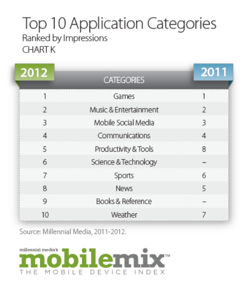

After checking out this section for a few days or weeks you might find yourself following a few regulars who frequently opine on responsive design, enjoy!
Mobile moves fast and it pays to keep your finger on the pulse on the industry and what's going on in all the various facets of Mobile.
Twitter actually has a sign in with Twitter feature that can be implemented if a user has access to a browser or a web-connected mobile device. Due to the popularity of Twitter and its recognizable brand any website or mobile web app could integrate the sign in with Twitter functionality to allow their users to very easily register on their websites or mobile apps. Similarly your Twitter account information could be used to purchase items/products as proposed by paycento. Please see the reference links below.
JSON-P (JSON with Padding) let's us get around the same origin policy providing cross-domain access to an existing JSON API, by wrapping a JSON payload (object) in a function call. Please see reference link below.
My current AVF project concept is to aggregate, organize and summarize responsive design practices and techniques. Initially mashing the native feature of connection and device with customizing content and paving the way to access data APIs relative to responsive design would be obvious first choices. While obvious and probably the most simple implementations of native features connection and device appear to be a great place to start and very valuable for any app. Utilizing various social networks like twitter and Facebook along with youtube APIs would also be great places to start pulling in relevant chatter, information, videos and current posts on responsive design. This information could then be mashed in any number of ways. Articles of interest could access the storage native feature to save favorites. These favorites could also be stored temporally while the local contact database is accessed facilitating emailing an important piece of aggregated responsive news to a friend or client. Finally you could use the notification native feature with the data that you have pulled to notify friends, users ,clients etc.. that a specific piece of news has arrived.
Similar to the mashup ideas I stated in my answer to question 3 I would like to integrate Twitter feeds searched by responsive design keywords (fluid text, fluid design , fluid grids etc...) into a stored list that can be referenced, shared and appended to. I would also like to integrate relevant responsive news into the app via the storage and alert native features. With regard to design I want to fully implement a responsive design that will automatically respond to mobile, tablet and desktop contextual environments. I’ll prioritize the content by viewport and gradually move from two columns with a header and footer to one column on a mobile device. Content will also be prioritized re-ordered and re-organized based on viewport and contextual relevance. . I will also try to keep usability in mind utilizing alerts as well as integration with social media even if its just links when appropriate in the app.
Planning and organization is key with regard to development! There are so many different components and parts to building a mobile app that anything less than a concentrated effort in these two areas could result in failure, leaving something out, missing a requirement or not being able to actually build the application. So, while its a work in progress, I'm trying to develop a methodology/procedure to follow when developing a mobile app. This includes breaking the project down by requirements and this means for Full Sail classes looking at all the weeks requirements in the beginning so you can see the big picture and plan accordingly. I have also been trying to break things down by technology, framework, programming language etc. in order to help keep things in the in the right department so to speak. This also helps with trouble shooting. This time around I have used moqups.com and mindjet.com to assist me. Time management is also key getting hung up on a bug with an open source install is common place if you don't divide your work accordingly and get hung up on a bug too long you very well might run out of time. Lastly I'm learning to immediately go to the web when I believe I'm in bug land to attempt to research a solution in an effort to save the most precious of all commodities time.
Don’t include Flash for starters or strip it out, screen readers have a problem with Flash video. Use HTML5 video for native controls, captions, descriptions, audio descriptions and sign language video. Make sure that all images and video have good descriptions associated with them by utilizing the “alt” attribute, most browsers will display or read this attribute if there is a problem displaying the image. Make sure that your fonts are resizable/relative thus allowing the viewer to change the font size through the browser. Also use semantic HTML tags. These tags are much more descriptive than div tags so when screen readers read your semantic HMTL much more information and understanding is relayed. You could also take advantage of HTML5’s markup for captioning (webVTT), descriptions and subtitles when using video. Finally keep the presentation and functionality layers separate.
Generally the current price point of screen readers excludes and estimated 85% of the market, they’re expensive. Blind people can’t see the cursor and have to memorize keyboard commands. Traditional browsers aren’t much use to blind people due to the webpage being populated with images and graphics that are of no use to blind people so text browsers should be used to increase efficiency. Some of the other top frustrations of screen reader users are the page layout of the site causing confusion, poorly designed forms, misleading links, inaccessible PDFs or files, and screen reader crashes. Obviously designing a web environment keeping accessibility in mind is a good first step in easing these frustrations. By using semantic HTML websites through descriptive tag names can effectively convey a sites layout reducing confusion. Also using software to cleanup and check your code and assist in reducing frustrations by identifying missing “alt” attributes broken links and other problems with your websites code.
Well I never looked at it this way before but SIRI the Apple iOS assistant is obviously a device made specifically to support accessibility. Just by pressing a button you can bring up the SIRI assistant ( there is an audible beep when SIRI is ready. You can then speak your request and SIRI will search its database for an answer for you. If no answer is found you are prompted with an option to continue your search on the web. No typing is generally necessary when using SIRI so not only does this help the blind but also the physically impaired. For my second device I would like to use the iPhone itself specifically the touch based interface. As stated above one of the main frustrations with impaired users using screen readers is the fact that they have to memorize the hot keys and quick key in order to work with the screen reading software to navigate around the webpage. Having a touch based interface can remove much of this frustration by letting simple finger gestures take the place of sophisticated key commands.
Talking Calculator by Adam Croser has full voice over support and the option for users to use speech for answers, button names and formulas. As you move your finger over the screen the names of buttons are spoken to you. In addition the app is customizable for different levels of vision. Normal to low vision would have large, clear buttons with optional speech while low vision has high contrast display mode with optional speech etc. Digit-Eyes QR Code/Barcode Reader Labeler by Digital Miracles, LLC allows users to scan UPC / EAN codes a hear the names of over 34 million products. In addition the app/ site allows user to download there own QR codes to place on and label whatever they want with a voice recording. So a blind user could label items in the fridge or panty etc. When the item is scanned it reads the users recording describing the item. The website that I used for much of this information literally had hundreds of these accessibility apps broken out into 20 or so categories. Pretty impressive to know that all this exists out there.
While its difficult to get any specific “current” data regarding what exactly the “top selling” app categories are per country we can look at what the “top selling” app categories are in the overall mobile market as well as specific country trends and extrapolate from there. Referencing data that is 1 year old or even six months old might not be the best use of our time considering the pace of change the mobile industry is experiencing. Plus what the best selling app was yesterday probably will not be the best selling app tomorrow. The exponential increases in network bandwidth, mobile hardware/software device specifications along with advances in social search and data mining all provide us with a rapidly changing landscape that should force us to think of a app idea that looks past todays successes. The opportunity to develop the next best selling app should not be looked at in a general sense but in a specific and targeted one after all the underlying benefit and utility of mobile is just that. Plus app development has be going on for at least 5 years now so the low hanging fruit has been picked. Who wants to compete on a level where significant money and resources have already been allocated and competitive barriers to entry are significant and expensive. With a mobile landscape so fertile and growth exponential in the foreseeable future let’s focus on out flanking our competition by specializing on opportunity where there is sufficient demand, profitability and less competition, the second and third tier. To do this lets review some current data. The following chart gives us a good idea of the top app categories over the past two years (Mobile Mix, 2012).

Now let’s pick out some general trends in the US, Japan and Great Britain by looking at specific country data in a report commissioned by Google and conducted by Ipsos MediaCT in partnership with the Mobile Marketing Association and the Interactive Advertising Bureau. (Google, 2012).
Given the data above we can see that all the major trends by category are represented by the usual suspects; Games, Music & Entertainment, Mobile Social Media, Communication, Productivity and Tools, Science & Technology, Sports, News, Books & Reference and Weather. We can also see that at even its lowest level (about 13%) smartphone users local affiliation and focus still gives us a 1 in 10 target rate. The question is how can we stand out? How can we be different? One way to do this is to try and predict the future and identify what’s not there yet that should be or will be soon. Remember the pure plays back when the internet was first getting started? Remember the globalvillage.com? Basically the idea was that if you specialized in one subject and did it the best you could become the final destination for the global village of connected users for that particular subject; lamps.com, barstools.com gamestop, fabrics, sheet metal etc... this list goes on and on for any category you can think of. These categories will fill out and mature with the industry. So now lets look back at the top selling categories identified above and pretend that they are the first level of categories that has risen to the top in a relatively young industry. What is the second and third level going to be? Naturally, just like the internet in the beginning, global villages (apps) will be created for the second and third level categories. I suggest we focus our application development efforts on what we believe one of the best second level categories will be coupled with a push toward local. If we look at how several of the search engines categorize their search categories we see the same categories listed above in mobile’s top ten app categories but we also find 10-15 other categories like; finance, home & garden, health, law, food & drink etc... The main search engines have already predicted our second and third level categories giving us a window into mobiles future. This is where I would recommend we initiate our efforts once again coupled with a local push meaning that our central focus either aggregates or mashes local business and resources with our product solution. Each market will be slightly different but each market whether its the US, UK or Japan will have a second level of categories that will be coming online. This coupled with the significant trends, country agnostic, toward local search and commerce will provide us with our “top selling” app. With a commitment toward additional funding for research of second level categories we can identified per country the appropriate second level category and work can begin toward specifying the app with appropriate local business and resource integration.
Other things to consider. Each country will have specific cultural, economic, infrastructure and social differences that will impact development but generally speaking the main things that could effect development would be bandwidth constraints and their effect on delivering heavy assets like video. Any new app development should be targeted at a 3G network at this point. Avoid any app ideas that require the use of heavy assets initially for the following reasons. Most of the top application categories above haven’t gotten there solely due to heavy assets if they did they own the assets, specialize in aggregating them and/or create them themselves. All reasons not to initiate development of an app requiring heavy assets unless you fall into one of those categories. Right now heavy assets shouldn’t be required for a second level category app and can be planned for with an iterative design strategy. Basically we can use heavy data down the road when called for or required. Not relying on heavy assets or video should allow us to provide a second level category app solution to any market we choose knowing that we can move toward heavier assets in the future. Even the most developed mobile networks risk access an usability issues with their users if they rely on heavy assets which can reflect negatively on their brand and customer experience. The exceptions being brands that currently have video as their primary asset or need it based on their product offering. HBO has no choice and we don’t want to compete with Youtube do we. Plus we can keep down initial development costs not supporting video. In other words now is not the time to lead with video for a new multi market app solution.
Costs per user are generally out of our control if we follow the current business model trends of apps on the market which generally fall into charging a nominal fee of $1 or so to deriving all their revenue from advertising. Unless the plan is to charge $30 (or something like that for your app) either charging a small amount or deriving revenue from advertising should prevent any major obstacles due to specific geographical economic issues. What type of data plan users are on should also not matter initially if our focus stays away from heavy assets.
In conclusion I would recommend focusing on the US market due to its maturity mobile penetration and likelihood that second level categories will become more popular quicker. I would also focus specifically on finance or health leveraging current US sensitivities (finance) and national focused efforts (healthcare).